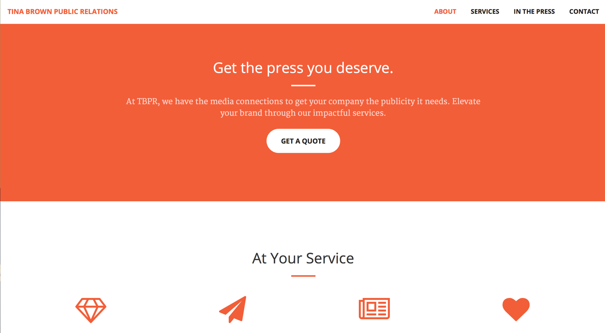

Quick Facts
-
The outdated WordPress website was in need for a new look—I was able to get the site up and running in 3 months
-
Aside from updating the website's design, I also implemented SEO best practices in the code base
-
Following the redesign, domain authority improved by 7 points and average time spent on page increased from 1 minute and 30 seconds to 2 minutes and 30 seconds
The task
TBPR is a wonderful, small-sized firm that is great at what they do. However, their website needed a makeover. Not only was the site not responsive, it also lacked Schema, Open Graph Protocol, and other markup key to SEO.
The site needed a major overhaul. The only thing that would stay intact would be the site's architecture and most of the content (about page, contact page, etc.).
What I did
In order to refresh the site, I took a 6-step approach.
-
Current site analysis - I took an in-depth look at the front end and back end. I also looked at the current design and content.
- Ideation - After digging around the existing site, I gave suggestions on how the new site should appear.
- Mockups - Next, I created loose wireframes of what I envisioned the new site would look like. After a few revisions, I was ready to go.
-
Development - After getting approval on the new site's look and feel, I got to coding. I built a fresh WordPress theme using the Bootstrap framework. As I developed, I made sure to add necessary Schema and microformat markup. This was longest phase by far, but by the end I had the new site theme live.
-
SEO optimization - Afterwards, I went back in and added appropriate meta titles and descriptions using the SEO Yoast plugin, one of my favorites.
-
Final touches - Aside from redoing the site's theme, I also had the TBPR site move over to a better hosting plan, which sped up the site tremendously. Finally, I set up static assets to be hosted on a CDN, which got the site running faster than ever.
Outcome
The new TBPR site is not only mobile-friendly, but also developed in a way that is better for ranking in the search engines and integrates with social networks.
Specifically, Tina Brown has reported that:
-
Average time on page increased by one minute
-
The domain authority ranking improved by 7 points
-
Overall, the number of new leads has shot up—proving the importance of a modern site
Want to build something like this?
Get in touch now